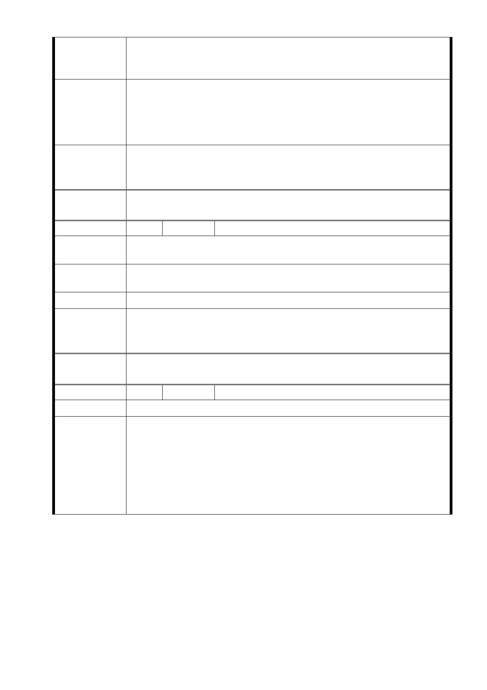

重要之長條邊緣地帶，上有大量建築樑柱及埋設大部分設備與修
護機具，若拆除將影響廠房結構安全，及公司正常營運並影響員
工生計，若徵收補償亦將浪費公帑，本公司不同意徵收。
1. 維持機場邊緣特定專用區之完整性，不要徵收本公司用地。
建 議 辦 法 2. 可將跑道中心線往北移或起點往東移。
3. 中心線左右 150 公尺安全距離外勿再增加到 167.5 公尺。
4. 請貴局想出更佳解決方法。
市
意
府
回
應
見
有關陳情位置經交通部民用航空局評估，擬先剔除該等區域於本
次變更範圍外，後續將納入「松山機場暨周邊地區土地整體發展
計畫」檢討因應配套措施。
委
決
員
會
議
同「市府回應意見」
編
號3
陳情人 黃林○玉
陳情位
置
中山區大佳段二小段 5○○、5○○-1 地號
中山區濱江街 256 巷○號
陳情理
由
我們土地上的建物為百年以上的三合院老房子，不能被依計畫削
去一半。
建 議 辦 法 全部徵收或全部不要徵收。
市
意
府
回
應
見
陳情人被徵收之土地及建築改良物之殘餘部分，若不能為相當之
使用，後續將依土地徵收條例第8條「一併徵收」之規定納入辦
理。
委
決
員
會
議
同「市府回應意見」
編
號4
陳情人 中嶽殿管理委員會主任委員陳○傑
陳 情 位 置 中山區大佳段二小段 7○○-6 地號
中嶽殿百年存在替民航局管理無主骨頭，五十年前 10 號跑道頭
原本為墳墓區之後變更為機場用地，由民航局發包給葬儀社將無
主骨頭統一集中於此機場用地上，久年風吹日曬，野狗啃食非常
陳 情 理 由 髒亂，前輩覺得不妥出錢出力蓋了此廟，地上一樓為地藏王菩薩
，地下一樓為替民航局管理無主骨頭歸放的萬姓公，每年也付出
租金約二十幾萬向民航局承租，並在每年農曆七月一日做法會超
渡，已成為附近 12 里的里民大家共同祭祀無主亡魂的寺廟。
- 11 -